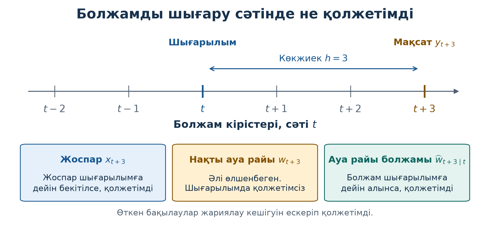
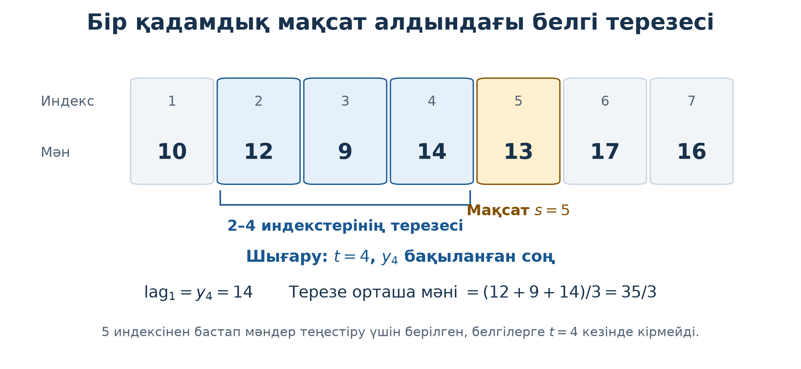
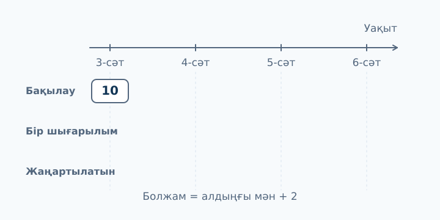
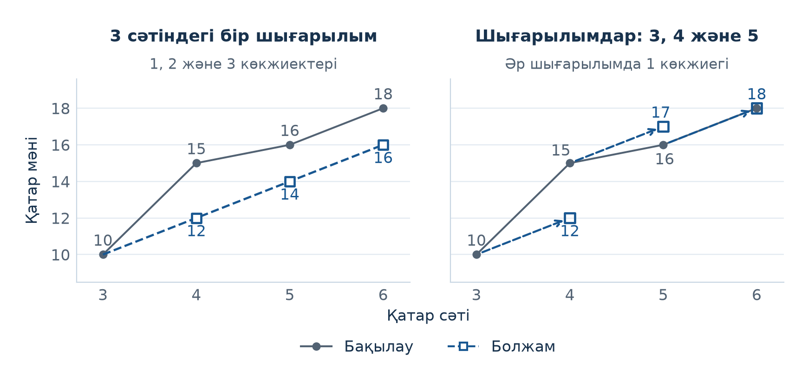
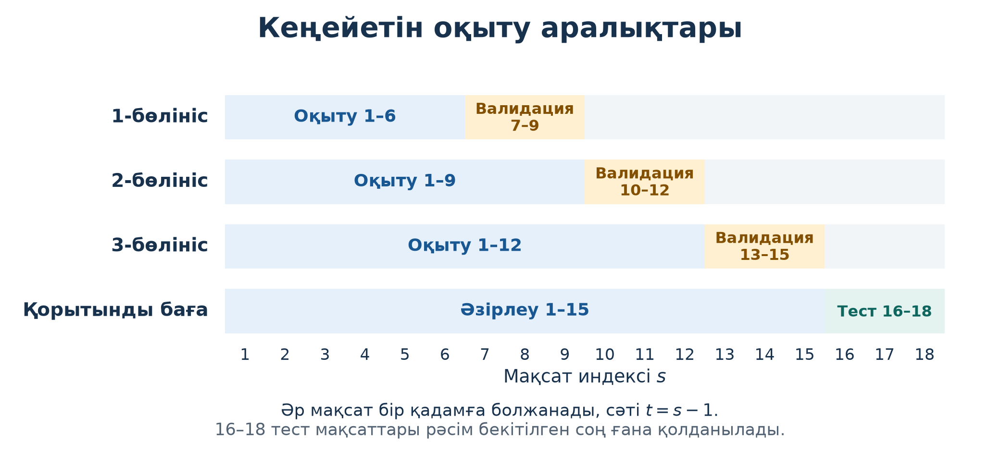
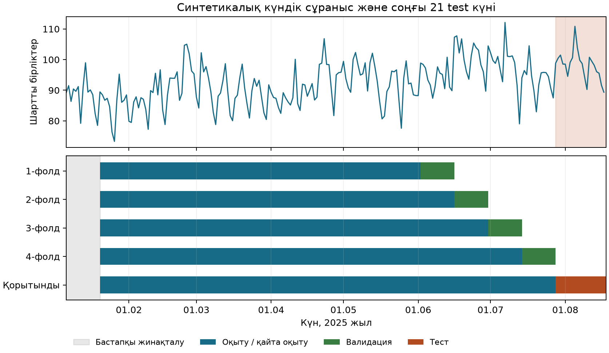
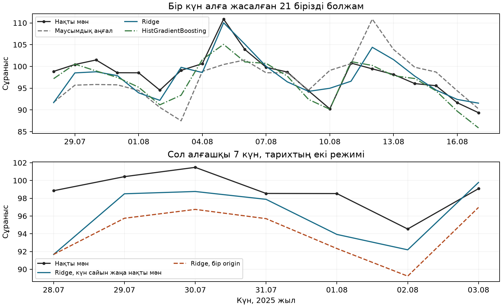

11-тарау. Уақыт қатарлары мен болжауға арналған машиналық оқыту
11.1 Тақырып бағдаршысы
Әр таң сайын диспетчер ертеңге қанша электр энергиясын резервтеу керегін шешеді. Ол кешегі тұтынуды, жұмыс күндерінің күнтізбесін және таңға дейін шығарылған ауа райы болжамын көреді. Ертеңгі күннің нақты температурасы кейін белгілі болады. Тарихи кестеде осы үш баған да толтырылған. Егер мәндердің қашан пайда болғанын тексермей, бір жолдағы мәндерден оқыту мысалын құрастырсақ, іске қосылғанда кіріс деректері жетпейтін модель алуымыз мүмкін.
Бұл тарауда болжамды шығару сәтін (forecast origin), көкжиегін және рұқсат етілген тарихты анықтайсыз. Содан кейін лагтарды, терезелік және күнтізбелік белгілерді құрып, қарапайым базалық бағдарларды регрессиямен және бустингпен салыстырасыз, көпқадамды болжау тәсілдерін ажыратып, оларды бірінен кейін бірі келетін аралықтарда бағалайсыз. Зертханалық жұмыс тарихы жаңартылатын бір қадамдық болжамға арналған. Оның рәсімі бүкіл траектория бір сәтте шығарылатын қойылымнан бөлек тексеріледі.
Пререквизиттер — 2-тараудағы деректерді дайындау, 3-тараудағы регрессия, 5-тараудағы метрикалар мен тексеру жиындары, 7-тараудағы параметрлерді таңдау және 9-тараудағы ансамбльдер. Негізгі ұғымдар — уақыт торы (time grid), көкжиек, шығару сәті, қолжетімділік, лаг (lag), маусымдылық (seasonality), аңғал базалық бағдар (naive baseline), жылжымалы терезе (rolling window) және шығару сәтін бірізді жылжытып тексеру (rolling-origin evaluation).
11.2 Қатар, уақыт торы және болжам қойылымы
11.2.1 Нақты не өлшенеді
Уақыт қатары (time series) әр мәнді белгілі бір сәтпен немесе аралықпен байланыстырады. Минуттық температура өлшеу сәтіндегі бақылауды сипаттайды, ал тәуліктік тұтыну аралыққа жатады. Оқиғалар журналында бірнеше жазбаның уақыт белгісі бірдей болуы мүмкін. Тапсырма шешім қабылданатын бірлікке негізделеді. Ертеңге қор дайындау үшін тәуліктік шама қажет, ал жабдықты реттеу үшін сағаттық болжамдар керек болуы мүмкін.
Алдымен уақыт белгісінің мағынасын анықтайды. 2026-02-05 белгісі 5 ақпанның басынан басталатын тәулікті немесе осы сәтке дейін аяқталған аралықты білдіруі мүмкін. Осы мағыналарды шатастырсақ, болжам шығарылғанда әлі аяқталмаған тәулік тарихқа дайын өлшем ретінде енеді. Әртүрлі белдеулердегі құрылғылардың уақыты ортақ шкалаға келтіріледі, ал жергілікті күнтізбе әр орын үшін бөлек құрылады. Сағат ауыстырылатын белдеулерде жергілікті тәулік 23 немесе 25 сағат болуы мүмкін. Мұндай тәуліктердің қосындылары мен орташа сағаттық жүктемелер әртүрлі сұрақтарға жауап береді.
Бірнеше құрылғының деректері панель құрайды. Әр серияның идентификаторы сақталып, жолдары уақыт бойынша сұрыпталады. Топты ескермей бүкіл кестені ығыстыру бір құрылғының алғашқы бақылауына басқа құрылғының соңғы жазбасын тағайындауы мүмкін. Болжам белгілі құрылғыларға да, жаңа құрылғыларға да қажет болса, әр жағдай бөлек тексеріледі. Таныс құрылғылардағы болашақ мәндерді бағалау оқытуда болмаған нысандарға тасымалдануды өлшемейді.
11.2.2 Шығару сәті және қолжетімді ақпарат
Шығару сәтінің индексін t, қадамдардың оң санын h, мақсат индексін s=t+h деп белгілейік. Жүйе t сәтінде шын мәнінде қолдана алатын барлық ақпаратты арқылы белгілейміз. Осы көкжиекке арналған нүктелік болжам былай жазылады
t сәтінде уақыт белгісі t-дан кеш емес мәндердің тек бір бөлігі белгілі болуы мүмкін. Мысалы, тәуліктік есептегіш қорытындыны тәулік аяқталғаннан кейін бір сағаттан соң жібереді, содан кейін оператор жетіспейтін мәндерді нақтылайды. Алғашқы қолжетімді мән мен соңғы түзетуді жариялану белгілерімен сақтау пайдалы. Тарихи тексеру үшін шығару күні болған нұсқа алынады. Әйтпесе тексеруге пайдаланушы сол сәтте әлі көрмеген түзетулер енеді.
Болашақ мәндер алдын ала белгілі болуы мүмкін. Оларға апта күні, бекітілген жұмыс кестесі немесе тіркелген тариф жатады. Ауа райы мұрағатында болжамның шығарылған және алынған уақыты, мақсатты уақыты және бағалаудың өзі сақталады. s мақсаты үшін t сәтіне дейін алынған ең соңғы шығарылым таңдалады. s уақытындағы нақты ауа райы кейін пайда болады және кейінгі талдауда қолданылады.

Дереккөз: үш қадамға болжаудың авторлық сызбасы.
Белгілерді таңдағанда қолжетімділік паспорты толтырылады. Онда бастапқы кесте, оқиға уақыты, түсу уақыты, мән нұсқасы және уақыт бойынша біріктіру тәсілі көрсетіледі. Болашақ кестесі бар бағанның бекітілген нұсқасы шығарылымға дейін белгілі болса, оны қолдануға болады. Егер тарихи жоспарлар қорытынды нұсқалармен алмастырылса, нұсқалар мұрағаты немесе осы белгісіз тексеру қажет. Мұндай паспорт оқытуда және пайдалануда мысалдарды бірдей құруға көмектеседі.
11.1-кесте. Тәуліктік сұранысты болжаудағы қолжетімділік шарттары
| Өріс | Қай уақытқа қатысты | Қашан қолжетімді | Таңдау ережесі |
|---|---|---|---|
| Нақты сұраныс | Аяқталған тәулік | Есеп жүктелгеннен кейін | Шығару сәтіндегі нұсқаны алу |
| Апта күні | Мақсатты тәулік | Алдын ала белгілі | Жергілікті күнтізбе бойынша есептеу |
| Науқан жоспары | Мақсатты тәулік | Бекітілгеннен кейін | Нұсқаның күні мен әрекет ету мерзімін сақтау |
| Ауа райы болжамы | Мақсатты тәулік | Алынғаннан кейін | t-ға дейін алынған соңғы шығарылымды алу |
| Нақты ауа райы | Мақсатты тәулік | Өлшенгеннен кейін | Кейінгі талдауға пайдалану |
11.2.3 Жиілік, жетіспейтін мәндер және ажыратымдылықты өзгерту
Тұрақты тор талабы жолдардың ретіне емес, аралыққа қатысты. Күнделікті қатардан сейсенбіні алып тастасақ, сәрсенбінің алдындағы жол дүйсенбі болады. Алдымен күнтізбелік тор беріліп, бақылаулардың оған сәйкестігі тексеріледі. Торды қалпына келтіру өлшем жоқ орындарға жетіспейтін мәндер қосады. Содан кейін бос аралықты нөл, белгісіз мән немесе жабдықтың тоқтауының нәтижесі деп есептеу керегі бөлек шешіледі. Толық қамту расталса, тіркелген оқиғалар саны үшін нөл қолдануға болады. Жұмыс істемеген датчикте жазбаның болмауы температураны анықтамайды.
Сағаттан тәулікке ауысқанда физикалық мағынасы бар агрегаттау таңдалады. Қиылыспайтын аралықтарда өлшенген сағаттық көлемдер қосылады. Мақсатқа сай болса, температураны тең аралықтар бойынша орташалауға болады. Жинақтаушы есептегіш үшін кезең шығыны алдымен көрсеткіштердің айырмасынан, нөлденулерді өңдей отырып алынады. Кітапханадағы resample үшін топтардың басталуы мен тұйықталуы, шекаралары, белгілері және толық емес аралықтарды өңдеу нақты бекітіледі. Топ белгісі мен агрегаттың қолжетімді болу сәті әртүрлі болуы мүмкін. Жиілікті өзгерту жөніндегі pandas құжаттамасы.
Тарихи сигналды қалпына келтіруде интерполяция сол және оң нүктелерді қолдана алады. Мысалы, 09:00-дегі 12 және 11:00-дегі 18 көрсеткіштерінің арасындағы сызықтық интерполяция 10:00 үшін 15 береді. 10:00-де шығарылған болжамға 11:00 мәні қолжетімсіз. Тек бар тарихты, жетіспейтін мән индикаторын және осы қадамда рұқсат етілген ережені қолдануға болады. Осындай мәселе центрленген орташа мәндерде, кейбір цифрлық сүзгілерде және бүкіл тізбек бойынша үйретілген жіктеуде кездеседі. Олар тапсырма мен есептеу сәтін ескеріп таңдалады. Ретроспективті сипаттау үшін мұндай графиктерді модель белгілерінен бөлек көрсету орынды.
11.2.4 Курс материалдарындағы торды тексеру
Курс материалдарының мұрағаттық зертханалық жұмысында srt_data.csv датчиктер кестесі және EURUSD_1.csv минуттық қатары қолданылады. Белгілердің құрылымын ғана тексерейік. Бірінші файлда 25 датчик бойынша 4824 жазба бар. Әр датчик ішінде сұрыптағаннан кейінгі көршілес белгілер арасында ең жиі аралық бір тәулікке тең, сегіз аралықтың ұзындығы өзгеше. «Датчик, уақыт белгісі» жұптары бірегей. Демек, қайталанымдар болмаса да топтау мен тұрақтылықты тексеру қажет. Өзге ұзындықтағы аралық жетіспейтін жазбаны, кестенің өзгеруін немесе қосымша жазбаны білдіруі мүмкін. Толтырмас бұрын себептері жинау журналынан анықталады.
Екінші файлда 121 674 жазба бар. Ең жиі аралық бір минутқа тең, 52 көршілес аралық одан ерекшеленеді. Кестемен жұмыс істейтін деректерді сол кестенің күнтізбесімен салыстыру керек. Жабық уақыттағы жетіспеушілік пен қалыпты кезеңдегі үзіліске әртүрлі ереже қажет болуы мүмкін. open, high, low және close өрістері бар қатарды агрегаттағанда аралықты сипаттау үшін әдетте алғашқы ашылу, ең жоғары максимум, ең төмен минимум және соңғы жабылу алынады. Егер оның орнына минуттық жабылу бағаларының орташа мәні есептелсе, өріс атауы орташа мәнді көрсетуге тиіс. Бұл талдау уақыт пен агрегаттардың мағынасына қатысты. Әрі қарай зертханалық болжау экспериментіне шығу тегі толық белгілі жеке синтетикалық қатар қолданылады.
11.3 Уақыт белгілері және бақыланған тарих
11.3.1 Лагтар және терезелік агрегаттар
Мақсатты s уақытына теңестірілген кестелік ұсынуда s жолы жауабын қамтиды. k лагы — k кезең қашықтықтағы алдыңғы мән.
s үшін болжам сәтінде шығарылып, бақылаулар өз белгілеріне дейін қолжетімді болса, ең аз рұқсат етілген лаг h-қа тең. Жариялау d бүтін кезеңге кешіккенде , яғни шартын қанағаттандыратын мәндер рұқсат етіледі. Қолданбалы кестеде кешігулер әртүрлі болуы мүмкін. Онда бәріне бір кешігу тағайындағаннан гөрі әр қолданылған жазбаның қолжетімділік белгісін тексерген дұрыс.
Тұрақты d кешігуінде қолжетімді шекараға дейінгі w бірізді өлшемнен тұратын терезенің орташа мәні
d=0 болатын бір қадамдық қойылымда формула сұрыпталған тұрақты қатардағы y.shift(1).rolling(w).mean() өрнегіне сәйкес келеді. Алдымен ығыстыру ағымдағы мақсатты шығарады, содан кейін терезе соңғы белгілі мән мен одан бұрынғыларды алады. Ығыстыру болмаса, терезенің оң жақ шеті мәнімен сәйкеседі. Тұрақсыз қатарда үш жолдық терезе мен үш сағаттық терезе әртүрлі бақылауларды қамтуы мүмкін.
11.1-есептік мысал. Бесінші мақсат алдындағы терезе.
Бастапқы тарихта 1–7 біркелкі сәттерінде 10, 12, 9, 14, 13, 17 және 16 мәндері болсын. мақсат жолы сәтінен кейін құрылады, сондықтан 1 лагы 14-ке тең. Ұзындығы 3 терезе 12, 9 және 14 мәндерін қамтиды. Орташа мән 35/3≈11,67 болады. Ығыстырусыз орташа мән есептелсе, (9+14+13)/3=12 шығады. Бұл есептеуде әлі болжануға тиіс мән қолданылып қойған.

Дереккөз: 11.1-мысалдағы қатар бойынша авторлық есеп.
Терезе бойынша шашырау, минимум және максимум сол рұқсат етілген аралықта есептеледі. Тарих жетпейтін алғашқы жолдарға ереже бекітіледі. Бастапқы жинақталу жолдарын алып тастауға немесе қысқарақ терезелерге рұқсат беріп, нақты терезе өлшемін сақтауға болады. Бірнеше модельді бағалағанда оларды бірдей мақсатты сәттерде салыстырған дұрыс. pandas арқылы есептегенде min_periods пен жетіспейтін мәндер санының агрегатқа әсері ескеріледі.
11.3.2 Күнтізбе, маусымдылық және қатардың өзгеруі
Апта күні, сағат және ай нөмірі қайталанатын құрылымды бейнелейді. Апта күні белгісін жеке индикаторлармен ұсынуға болады. Тегіс периодтық әсер үшін m қадамдық цикл ішіндегі q фазасына екі координатаны сәйкестендіру ыңғайлы
Циклдің соңғы және алғашқы күндерінің нүктелері шеңберде жақын орналасады. Кәдімгі сандық кодта олар шкаланың қарама-қарсы шеттерінде жатады. Синус пен косинус тегіс бірінші гармониканы сипаттайды. Жұмыс және демалыс күндері арасындағы күрт ауысуды индикаторлармен берген ыңғайлырақ болуы мүмкін. Өнеркәсіптік үдерістерде тәуліктік және апталық периодтылық қатар кездеседі. Әртүрлі циклдер жеке белгілермен ұсынылып, хронологиялық кесінділерде тексеріледі.
Қатар графигі тұрақты қайталанатын өрнекті бір ерекше кезеңнен ажыратуға мүмкіндік береді. Тренд деңгейдің баяуырақ өзгеруін сипаттайды, маусымдылық белгілі күнтізбелік кезеңмен қайталанады, ал режим ауысуы нақты күннен кейін деңгейді немесе дисперсияны ығыстыруы мүмкін. Уақыт белгісі кейде тұрақты трендте көмектеседі, бірақ модель оны мұндай үрдіс жоғалған шектен әрі жалғастыруы мүмкін. Қателердің фазалар және уақыт бөліктері бойынша үлестірімі оның қайда болғанын көрсетеді.
Өткен бақылаулардың айырмалары деңгейдің жуырдағы өзгерісін сипаттай алады. Регрессия айырманың болжамын берсе, бастапқы бірліктерге қайтарғанда соңғы рұқсат етілген бақылау немесе бұрын болжанған өзгерістер тізбегі қосылады. Метрикалар мен графикте шешім қабылдау бірлігі сақталады. Кері түрлендіруде болашақтың нақты мәнін қою қосымша деректердің ағып кетуін туғызады.
11.3.3 Оқыту алдындағы белгілерді тексеру
Бірнеше жолды қолмен салыстырыңыз. Әрқайсысы үшін шығару сәтін және лагтың, терезенің, жоспарлы белгінің дереккөздерін сақтаңыз. Оның жетіспеушіліктен кейінгі алғашқы жол екенін, бөліну шекарасында тұрғанын және күнтізбесінің мақсатты уақытқа қатысты екенін тексеріңіз. Әр жол шынымен тек қолжетімді тарихты қолданса, өткенге жасалатын амалдарды алдын ала есептеуге болады. Масштабтау, лагтарды метрика бойынша таңдау және толтыру параметрлерін бағалау сияқты үйретілетін қадамдар оқыту бөліктерінің ішінде орындалады.
Инвариантты тексеру жасырын тәуелділікті табуға көмектеседі. Бір шығарылымның белгілерін алдымен толық мұрағатта құрыңыз, содан кейін кірістерден әлі қолжетімді болмаған барлық жазбаларды алып тастаңыз. Осы шығарылымның мәндері бірдей болуы керек. Уақыт белгісі қайталанған, жариялау кешіккен және аралық жетіспейтін жағдайларды тексеріңіз. Деректер қайта қаралса, бақылаудың кейінгі нұсқасын өзгертіп, ерте жолдардың сақталғанына көз жеткізіңіз. scikit-learn ішіндегі лагтық белгілер мысалы.
11.3.4 Сигнал терезелерінен белгілерді шығару
Курс дәрісінде сигналдарды өңдеу және кеңейтілген белгілер қарастырылады. Болжам моделінде бұл әр шығарылым мен әр құрылғы үшін терезе бөлуден басталады. Терезе бойынша ауқым, орташа көлбеулік немесе тербеліс сипаттамалары есептелуі мүмкін. tsfresh сияқты құралда шығару автоматтандырылса, сипаттамалардың үлкен жиынынан үйретілетін іріктеу оқыту фолдтарында орындалады. Бір қатардың ерте және кейінгі терезелері қабаттасады, сондықтан тексеру олардың уақыт ретін сақтауы керек. tsfresh құжаттамасы.
Теріс емес матрицалық факторлауда (non-negative matrix factorization) жолдар өткен терезелерді, ал бағандар өлшемдерді немесе алдын ала анықталған сипаттамаларды сипаттай алады. Модель бірге кездесетін компоненттерді бөледі. Базис оқыту терезелерінде бағаланып, содан кейін келесі терезелерді түрлендіруге қолданылады. Әдіс теріс емес ұсынуды талап етеді, бұл шарт алдын ала өңдеуді таңдағанға дейін тексерілуі керек. Бүкіл тізбекті факторлап, кейін бөлу болашақты ескеретін базис берер еді. NMF құжаттамасы.
11.4 Базалық болжамдар және үйретілетін модельдер
11.4.1 Аңғал және маусымдық базалық бағдарлар
Аңғал болжам соңғы белгілі бақылауды қайталайды. Маусымдық аңғал болжам сол фазаның соңғы мәнін алады. Периоды m және t-ға дейінгі тарихы қолжетімді тұрақты қатар үшін осы ереже (11.5) формуласымен өрнектеледі.
h≤m болса, индекс t+h−m болады. h>m кезінде индекс тарихта қалуы үшін мән бірнеше маусым арттан ізделеді. Мысалы, t=20, m=7 және h=9 болса, мақсат индексі 29. Маусымдық мән индексі 29−14=15 болады. Кешігу болғанда қажетті фазаның шын қолжетімді соңғы бақылауы қолданылады. Ол болмаса, қосалқы ереже алдын ала бекітіледі. Hyndman және Athanasopoulos, қарапайым болжау әдістері.
Тұрақты режимде оқыту тарихы бойынша орташа немесе медианалық болжам да пайдалы. Медиана тұрақты жауап үшін абсолюттік ауытқулар қосындысын азайтады. Қандай базалық бағдар керегі тест қателерін қарағанға дейін анықталады. Апталық сұраныс үшін маусымдық модельді кәдімгі аңғал модельмен қатар ұстап, бірдей мақсатты күндерде бағалау орынды. Үйретілетін модель күшті базалық бағдардан ұтылса, бұл маңызды өлшенген нәтиже.
11.4.2 Кестелік белгілерге арналған регрессия және ансамбльдер
Регрессияда жол қолжетімді тарих пен күнтізбені, ал жауап болашақ деңгейді сипаттайды. Ridge бар сызықтық нұсқа лагтар мен күнтізбелік айнымалылардың салмақтарын бағалайды. t шығару сәтінде қолжетімді мәліметтерден құрылған s мақсатына арналған j белгісін деп белгілейік. Болжам мына формуламен алынады
Терезелер қабаттасып, бірнеше лаг ұқсас ақпарат тасымалдағанда регуляризация пайдалы. Масштабтау әр бөліністің оқыту бөлігінде орындалады. Қатардың жаңа деңгейі орнағанда сызықтық модель бұрын үйренген тәуелділікті жалғастыра алады. Тексеру оның болашақ кезеңдерде мағынасы бар-жоғын көрсетеді.
Ағаштар жұмыс және демалыс күндеріне әртүрлі ережелерді, сондай-ақ өзара әсерлерді, мысалы температураның жүктемемен тек белгілі кестеде байланысын көрсете алады. Бустинг болжамға түзетулерді бірізді қосады. Ағаштарды кәдімгі ансамбльдеу тегіс трендтің оқыту белгілерінің шегінен әрі жалғасуына кепілдік бермейді. Тапсырма экстраполяцияны талап етсе, айқын тренд компоненті мен қалдықтар моделін немесе сценарийлік болжамды қарастырыңыз. Модельдерді салыстыру үшін қолжетімді кірістердің, күндердің, көкжиектің және тарихты жаңарту тәсілінің бірдей жиынын пайдаланыңыз.
Тізбекке арналған классикалық модельдер қосымша базалық бағдарлар береді. Экспоненциалды тегістеу өзгермелі деңгейді бағалайды, ал кеңейтілген нұсқаларда тренд пен маусымдылықты ескереді. ARIMA тәуелділіктерді авторегрессия, айырмалар және өткен қателер арқылы сипаттайды. Ретті немесе маусымдылықты өңдеу тәсілін таңдау да әзірлеу деректеріне қатысты. Тараудың мақсаты — классикалық және кестелік әдістерге ортақ қойылым мен тексеруді меңгеру. Hyndman және Athanasopoulos, экспоненциалды тегістеу, ARIMA.
11.5 Көпқадамды болжау және стратегияны таңдау
11.5.1 Шығару сәті және болашақ мақсаттар жиыны
Диспетчерге үш ауысымға жоспар құру қажет болса, модельдің бір іске қосылуынан үш болжам керек. Біріншісі жақын ауысымға, екінші және үшіншісі кейінгі ауысымдарға қатысты. Есептеу сәтінде үш ауысымның да нәтижесі белгісіз. Басқа рәсім нәтижелердің бір бөлігі түскенде әр ауысым алдында жоспарды жаңартады. Осы рәсімдердің модель атаулары мен күнтізбелік мақсаттары бірдей болуы мүмкін, бірақ шығару сәтіндегі кіріс ақпараты өзгеше.
Шығару сәтін , көкжиекті , мақсатты бақылау сәтін деп белгілейік. болжамы ақпаратымен құрылады, ол сәтінде қолжетімді. Қатар мәндері кешігіп жарияланса, белгілі бақылаулар жиыны -дан ерте аяқталуы мүмкін. Мысалы, күнделікті өндіріс көлемі келесі күні есеп тексерілгеннен кейін қолжетімді болуы мүмкін. Бұл жағдайда белгілер үшін жарияланған мәндер қолданылып, соңғы өлшем мен шығару сәті арасында үзіліс болғанда алғашқы болжамның қалай құрылатыны келісіледі.
көкжиегіндегі көпқадамды болжам бір бастапқы нүктеден
үшін мәндерді береді. Қадам тапсырманың дискретті уақыт бірліктерімен, мысалы сағатпен немесе ауысыммен өрнектеледі. Кіріс қатардың жуырдағы мәндерін, күнтізбе белгілерін және сыртқы жоспарды қамтуы мүмкін. Әр баған үшін шығарылымға дейін нені алуға болатынын білу маңызды. Болашақ ауысым нөмірі әдетте белгілі, ал нақты жүктемесі белгісіз болуы мүмкін. Осы мәліметтердің құрамы алгоритм таңдауына тәуелсіз тапсырманы анықтайды.
Жетіспейтін жазбалары бар мұрағатта жол нөмірі мен кезең нөмірі сәйкес келмеуі мүмкін. Бір тәуліктік жазба болмаса, кестедегі үшінші келесі нысан төртінші күнге қатысты болуы ықтимал. Үш күн деп берілген көкжиек бұл жағдайда күнтізбелік мағынасын сақтайды. Сондықтан болжау кестесі айқын уақыт белгілері бойынша құрылады. Нөл мәнін жетіспейтін өлшемнен қалай ажырату және бақылау күтілмеген кезеңдерді қалай ескеру керегі алдын ала анықталады. Осындай дайындықтан кейін белгілерді, мақсаттарды және сыртқы мәліметтерді бір күнтізбе бойынша сәйкестендіруге болады.
11.5.2 Рекурсивті стратегия
Рекурсивті стратегияда (recursive strategy) бір модель ең жақын мәнді болжауға үйретіледі. Кейінгі қадамдарға сол модель қолданылады. Келесі кіріске қатардың әлі болмаған бақылауы қажет болса, тиісті орынға есептелген болжам қойылады. Бір лаг кезінде бұл алғашқы шақыру нәтижесі екіншінің кірісі, ал екіншінің нәтижесі үшіншінің кірісі болатынын білдіреді.
лагы бар жазуда
арқылы
сәтіне қолданылатын мәнді белгілейік. Қарастырылатын сызбада
-ға дейінгі өлшемдер бірден қолжетімді. Онда
үшін
бақылауы, ал
үшін сол шығарылымда бұрын есептелген болжам алынады. Мақсат сәтіне арналған, шығарылымда қолжетімді немесе берілген сыртқы кірістерді
арқылы белгілейік.
Алғашқы қадамда лагтар бақылаулармен толтырылған. Кейінгі қадамдарда кірістегі болжам үлесі барлық лаг болжамдық болғанша өседі. Бұл ереже лагтардан есептелген белгілерге де қатысты. Мысалы, кейінгі қадам үшін соңғы үш мәннің орташа шамасы болжамдар болуы мүмкін бұрын құрылған терезеден есептеледі. Мұндай орташаға болашақтың нақты мәнін қойсақ, қолжетімді ақпарат пен бағалау тапсырмасын өзгертеміз.
Рекурсивті стратегия бір үйретілген модельді қолданады және қажетті сыртқы кірістер қолжетімді болса, есептеуді бірнеше қадамға жалғастыра алады. Оның бір қадамдық оқыту кірістері әдетте бақыланған тарихтан құрылады. Бірізді болжау кезінде модель өз болжамдарын алады, олардың үлестірімі өзгеше болуы мүмкін. Ерте қадам қатесі келесі қадамдарға әсер етуі ықтимал. Өту функциясына байланысты ол күшеюі, әлсіреуі немесе ішінара өтелуі мүмкін. Сызықтық емес модельде орташа болашақ мәнді келесі өтуге қою жалпы жағдайда ықтимал болашақ мәндер бойынша өту шығыстарын орташалаудан ерекшеленеді. Ben Taieb және Hyndman, 2014.
Бір лагы бар сызықтық өту үшін ерте ауытқуға сезімталдықты бөлек бақылау пайдалы. Алдыңғы мән коэффициенті болып, салыстырылатын екі траекторияның өзге кірістері бірдей болса, жаңа қадамда алдыңғы шығыстардың айырмасы -ға көбейтіледі. Коэффициент модулі бірден аз болса, осы жеке үлес бәсеңдейді. Коэффициент теріс болса, ол таңбасын өзгертеді. Толық болжам қатесі жаңа ұйытқулар мен сыртқы кірістер қателеріне де тәуелді. Сондықтан бір ерте ауытқудың бәсеңдеуі деректердегі алыс көкжиек қатесінің қандай болатынын әлі анықтамайды.
11.5.3 Бір шығарылым және жаңартылатын бір қадамдық болжам
Бір шығарылым және жаңартылатын болжам
Уақыт сызығы алдыңғы мәнге 2 қосатын бір модельдің екі болжам рәсімінде қандай ақпарат алатынын көрсетеді.

3-сәтте соңғы белгілі бақылау y₃ = 10. 4, 5 және 6-сәттердің нақты мәндері әлі қолжетімді емес.
Барлық қадамның мәтіні
- Шығару сәті — 3-сәтте соңғы белгілі бақылау y₃ = 10. 4, 5 және 6-сәттердің нақты мәндері әлі қолжетімді емес.
- Бірінші қадам — Екі рәсім де 4-сәтке 10 + 2 = 12 болжамын береді.
- Рекурсивті болжам — 3-сәтте бірден шығарылатын болжам өз шығыстарын қайта қолданады. 5-сәтке 12 + 2 = 14, 6-сәтке 14 + 2 = 16 алынады.
- Жаңа бақылау — 4-сәтте y₄ = 15 белгілі болғанда 5-сәтке 17 болжанады. 5-сәтте y₅ = 16 түскенде 6-сәтке 18 болжанады. Модель параметрлері өзгермейді.
Төрт сәт бойынша есеп. болып, одан кейін , және бақылансын. Модель алдыңғы мәнге 2 қосады. 3 сәтіндегі бір шығарылымда 4, 5 және 6 сәттері үшін 10 + 2 = 12, 12 + 2 = 14 және 14 + 2 = 16 болжамдарын аламыз. Үш қадам да бастапқы 10 мәнін және бір өту ережесін қолданады.
Жылжымалы бір қадамдық болжамда алғашқы шығарылым сол 12 мәнін береді. 4 сәтінде 15 бақылауы қолжетімді болғанда, 5 сәтіне жаңа болжам болады. 5 сәтінде 16 алынғаннан кейін 6 сәтіне болжам болады. Бұл мәндер тиісінше 3, 4 және 5 сәттеріндегі шығарылымдарға қатысты. 11.3-суретте айырмашылық өтулердің бастапқы нүктелерінен көрінеді.

Дереккөз: жасанды қатар бойынша авторлық есеп.
Бірінші хаттама үшін абсолюттік қателер 3, 2 және 2, олардың орташа мәні — . Екіншісінде олар 3, 1 және 0, орташа мәні — . Бірінші орташада үш көкжиек, екіншісінде бір көкжиектегі үш болжам біріктірілген. Кіші сан ақпарат жаңартылатын рәсімге қатысты және 3 сәтінде толығымен шығарылуы тиіс жоспар үшін артықшылықты дәлелдемейді. Бұл мысалда модель параметрлері өзгермейді. Жылжымалы шығарылым кірістерді қайта оқытусыз жаңарта алады. Жұмыс шешімі солай құрылған болса, әр жаңа бастапқы нүктеден барлық көкжиегіне болжам шығаруға да болады.
11.5.4 Тікелей стратегия және оқыту жауаптарының қолжетімділігі
Тікелей стратегияда (direct strategy) әр көкжиек үшін қолжетімді кірістер мен мақсатты мән арасындағы жеке тәуелділік бағаланады. Шығару сәтіндегі тарих пен басқа мәліметтерден есептелген белгілерді арқылы белгілейік. арқылы көкжиегінің моделіне рұқсат етілген сыртқы мәліметтерді белгілейік. Оларға мақсат сәтіне алдын ала белгілі мәндер немесе шығарылым кезінде алынған сыртқы траектория белгілері кіруі мүмкін.
Мысалы, басталуы болатын тарихи жолда екінші көкжиек моделі мәнін кезінде болған мәліметтерден болжауға үйренеді. Нақты шығарылымда мұндай болжам бірінші көкжиек болжамын лагтарға қоймай есептеледі. Алыс көкжиекке басқа белгілер жиыны мен басқа модель күрделілігін таңдауға болады. Мұндай икемділіктің құны — параметрлерді бөлек бағалау және қолжетімді оқыту жауаптары санының ықтимал азаюы. Екі модель нәтижелері тегіс емес траектория беруі мүмкін. Тізбек шектеулерге бағынуға тиіс болса, олар модельді құруда ескеріледі немесе болжамдарды өңдеу келісіледі. Ben Taieb және әріптестерінің стратегияларды салыстырмалы зерттеуі.
Оқыту кестесінде тарихи шығарылымның сәті мен модельді жинақтаудың сәті ажыратылады. көкжиекті жолдың кірістері кезінде қолжетімді, ал жауабы сәтіне дейін түскен болуы керек. Шарт жауаптың қолжетімді болу уақытымен, тіркеу немесе жариялау кешігуін қоса тексеріледі. Жолдың соңғы мақсаты қолжетімді ақпарат шегінен тыс жатса, ол жол осы көкжиекте оқытуға әзірге жарамсыз. TimeSeriesSplit ішіндегі gap аралығы мақсатты мәндердің тексеру басында қолжетімділігін ескеріп таңдалады. Оның есебі 11.6-бөлімде қарастырылады. TimeSeriesSplit құжаттамасы.
Жарамды жолдар санын есептеу. жинақтау сәтінде – бақылаулары белгілі. Әр тарихи шығарылымда ағымдағысын қоса соңғы үш мән қолжетімді. Алғашқы белгілер жолы сәтіне сәйкес. Бірінші көкжиекте 3-тен 9-ға дейінгі басталулар рұқсат етіледі, барлығы жеті жол. Екіншіде 3-тен 8-ге дейін, барлығы алты жол. Үшіншіде 3-тен 7-ге дейін, барлығы бес жол. Мысалы, кезінде алғашқы екі көкжиек үшін және жауаптары белгілі, ал әлі белгісіз. Бір қадамдық модельге жеті жол қолжетімді. Толық үшөлшемді жауабы бар бірлескен модельге бес жол қолжетімді.
Қысқа жауабы белгілі шеткі жолдар тікелей стратегия үшін пайдалы болып қалады. Модель құрылымдарының әсерін бірдей жол санында салыстыру қажет болса, оларды ортақ рұқсат етілген жиынмен шектеуге болады. Онда қысқа көкжиектер бар оқыту мысалдарының бір бөлігін жоғалтатын жеке қойылым салыстырылады. Сондықтан есепте әр көкжиек үшін кесте құру ережесі бекітіледі. Модельдердің тексеру сәттері бірдей болса да, мысалдар санының әртүрлілігі түсіндіруге әсер етеді.
Бір болашақ жауап әртүрлі көкжиектердің кестелерінде кездесуі мүмкін. Мысалы, 10 сәтінің мақсаты бірінші көкжиекте 9 басталуына, екінші көкжиекте 8 басталуына қатысты. Бұл жолдар әртүрлі болжау шарттарын сипаттайды, өйткені бір шешім екіншісінен ерте шығарылады. Ортақ кестеде жол кілті басталу мен көкжиекті қамтиды. Мақсат сәті бойынша жай біріктіру кірістер айырмасын жоғалтып, кейінгі шығарылым белгілерін ертерек шығарылымға тіркеуі мүмкін.
11.5.5 Бір шығыс векторы
Көп шығысты бір функциямен болжауға болады. Бірнеше кірісі және бірнеше шығысы бар стратегия MIMO (multiple-input multiple-output) деп аталады. Ол белгілердің бір жолына барлық берілген көкжиектер бойынша болжамдар векторын береді. арқылы сәтінде қолжетімді сыртқы траекторияны немесе оның ұсынуын белгілейік.
Модель параметрлердің бір бөлігін шығыстар арасында ортақ қолдана алады. Мысалы, бір ағаш барлық шығыстарды ескеретін критерий бойынша ортақ бөлінулерді таңдап, жапырақта көкжиектерге арналған бірнеше болжамды сақтайды. Көкжиектердің заңдылықтары әртүрлі болса, ортақ параметрлер икемділікті шектеуі мүмкін. Толық векторлар бойынша оқытудың стандартты қойылымында барлық жауабы қолжетімді жолдар сақталады. Мақсатты мәндер ішінара жетіспесе, шығын маскасымен оқытуды таңдалған модель айқын қолдауы қажет. Ben Taieb, Sorjamaa және Bontempi, 2010, scikit-learn көпмақсатты ағаштары.
Мақсаттар матрицасы бар интерфейс шығыстардың қалай байланысқанын әлі көрсетпейді. Мысалы, scikit-learn ішіндегі MultiOutputRegressor әр баған үшін бөлек регрессор іске қосады. Ол вектор қайтарады, бірақ ішкі модельдері бөлек үйретіледі. Жолдар мен кірістер бірдей болғанда мұндай сызба тікелей стратегияға жақын. Ал бірлескен модельде ортақ құрылым немесе параметрлер бар. Тіпті ортақ құрылымның өзі жинақталған көлемнің монотондығы сияқты шектеулерді енгізбейді әрі белгісіздіктің бірлескен үлестірімін бермейді. Бұл қасиеттер тапсырманың бөлек шарттарын талап етеді. MultiOutputRegressor.
Бірлескен оқытуда әртүрлі шығыстардың шығындарын қалай есептеу керегін таңдау қажет. Толық векторларда әр көкжиек үшін мақсаттар саны бірдей. Алайда салмақтар тең болғанда да қателері ірі көкжиектер қорытынды квадраттық шығынға күштірек әсер етуі мүмкін. Маскаланған қосындыда әр шығысқа қанша қолжетімді мақсат қатысатыны және нормалаудың қалай орындалатыны да маңызды. Нақты көкжиектегі қате құны жоғары тапсырмада модель мұндай оқытуды қолдаса, салмақтар беруге болады. Осыдан кейін салмақ таңдаудың әсерін жалпы нәтижеден бөлек көрсету үшін әр көкжиектің қатесін хабарлау пайдалы.
Мақсаттар матрицасындағы координаталар реті оқытуға дейін беріліп, болжауда сақталады. Бірінші координата ең жақын болашақ бақылауға, соңғысы алыс бақылауға сәйкес. Әр тарихи жолдың барлық координаталары бір басталудан есептеледі. Бірлескен модель болжамдарын тікелей болжамдармен жеке бағандар бойынша салыстыруға болады. Тапсырмаға бүкіл траектория пішіні маңызды болса, оның алдын ала анықталған критерийі, мысалы жоспарланған кезеңдегі жиынтық көлем қатесі қосылады. Бір бағандағы жақсы сапа тек өз көкжиегі туралы хабарлайды.
11.5.6 Болашақ сыртқы белгілер және сценарийлер
Болашақ сәттің сыртқы кірісі белгілі, болжамдық немесе сценарийлік болуы мүмкін. Күнтізбелік күн белгілі. Жұмыс кестесінің қолданылатын нұсқасы шығару сәтінде қолжетімді болса, бекітілген жоспар жағдайында ол белгілі деп есептеледі. Болашақ сағаттың температурасын сәтіне дейін шығарылған ауа райы болжамынан алуға болады. Келесі ауысымда жүктеу жоспарланған машиналар санын сценарий шарты ретінде беруге болады. Барлық жағдайда сыртқы мәннің өзіне қатысты сәті және қолжетімді болған сәті бар.
Мұрағатта бір мақсат үшін сыртқы шаманың бірнеше болжам шығарылымы болса, әр ретроспективті мысалда негізгі модельді шығару сәтінде шын қолжетімді болған нұсқа таңдалады. Бұл екі уақыт өрісін: мерзім мен жариялау сәтін талап етеді. Болашақтың нақты температурасы мінсіз ақпарат жағдайындағы бөлек бағалауға жарайды. Қалыпты бағалауда ол ауа райы болжамымен жұмысты қайталамайды. Модель оқытуда өлшенген сыртқы кірістерді, ал жұмыста болжамдық кірістерді алса, олардың сапа айырмасын ескеріп, бүкіл тізбекті болжамдардың қолжетімді нұсқаларымен тексеру керек. skforecast сыртқы айнымалылар құжаттамасы.
Екі сценарийді есептеу. Соңғы белгілі мән 20-ға тең. Модель қатардың алдыңғы мәнінің жартысына екі еселенген сыртқы кірісті қосады. Екі ауысым үшін A сценарийіндегі сыртқы мәндер 3 және 4, B сценарийінде — 5 және 4.
A үшін бірінші қадам 20/2 + 2·3 = 16, екіншісі — 16/2 + 2·4 = 16 береді. B үшін 20/2 + 2·5 = 20, содан кейін 20/2 + 2·4 = 18 аламыз. Айырма бірінші және екінші қадамдарда 4 және 2-ге тең. Екінші ауысымда сыртқы кіріс бірдей, ал есеп алғашқы ауысымның әртүрлі болжамдарын ескереді.
Берілген сандар берілген жолдар мен модельдің өзіне шартты. Олар модельдің кіріс өзгерісін рекурсия бойынша қалай тасымалдайтынын көрсетеді. Сыртқы траекториясы белгісіз болжам үшін қолжетімді сыртқы болжамды пайдалануға, бірнеше рұқсат етілген сценарийді бағалауға немесе тек өткен сыртқы мәндерге негізделген модель құруға болады. Соңғы екі нұсқада сұрақ өзгереді. Сценарийлер шартты нәтижелер береді, ал өткен кірістер моделі тарлау мәліметтер жиынымен жұмыс істеуге үйренеді. Бағалауда осы режимдердің қайсысы қолданылғаны бекітіледі.
Сыртқы шаманың болжамы да белгісіз болса, оның қатесі мақсатты болжамға берілуі мүмкін. Бір бекітілген сценарийде есептелген интервал сол сценарий шарттарына қатысты. Сыртқы белгісіздікті ескеру үшін ықтимал траекториялар, ал ықтималдық болжамда олардың ықтималдықтары немесе модельдеу тәсілі сипатталуы керек. Көрсетілген екі траектория өздігінен ықтималдықтарды анықтамайды. Диспетчер үшін бұлар жүктеме мен құны бойынша салыстырылатын екі жоспар баламасы болуы мүмкін. Жоспарды таңдамай болжау үшін қандай сыртқы жол жүзеге асатыны туралы қосымша мәліметтер қажет.
11.5.7 Көкжиек бойынша салыстыру
Әр үшін бастапқы нүктелер жиынынан бір ережемен шығарылған болжамдар жиналады. Болжам мен бақылау мақсат сәті бойынша сәйкестендіріледі, ал болжам жазбасы шығару сәтімен бірге сақталады. Бұл маңызды, өйткені бір бақылау бірнеше шығарылым мен әртүрлі көкжиек болжамдарын бағалай алады. Көкжиектің орташа абсолюттік қатесі мына түрде жазылады
Осы көкжиекте стратегияларды салыстыру үшін бірдей рұқсат етілген бастапқы нүктелер мен келісілген сыртқы мәліметтер қолданылады. Мұрағат соңына жақын алыс көкжиектегі расталған мақсаттар саны аз болуы мүмкін. Сондықтан қатемен қатар көрсетіледі. Жалпы көрсеткіш қажет болса, әр көкжиектің немесе «шығарылым және мақсат» жұбының салмағы алдын ала анықталады. Қамту бірдей болмаса, осы орташалау тәсілдері әртүрлі нәтиже береді. Көкжиектер бойынша қате бейінін де сақтау пайдалы. Жақсы орташа мән резерв көлемін немесе жеткізу мерзімін анықтайтын көкжиектегі жеткіліксіз дәлдікті жасыруы мүмкін.
Журналда шығару сәтін, көкжиекті, мақсатты, болжамды және сыртқы жол нұсқасын сақтау ыңғайлы. Сонда қолжетімді жұптардың ортақ жиынын сүзіп, әдістерді соның үстінде салыстыруға болады. Белгілі көкжиек үшін расталған жауаптар әлі болмаса, тиісті қате анықталмай қалады. Төрт сәттік мысалда 3, 2 және 2 қателерінің әрқайсысы өз көкжиегіндегі тек бір шығарылымға қатысты. Әдістің қалыпты мінез-құлқын бағалауға қызықтыратын жұмыс режиміндегі шығарылымдар сериясының қателері қажет.
Стратегияны таңдау болжам мақсатына, қолжетімді оқыту мысалдары санына және жаңарту құнына тәуелді. Ең жақын бір қадам үшін бір қадамдық сызба сапасын тексеру жеткілікті. Бірнеше ауысымдық жоспар үшін қарапайым базалық модельді қоса, бірдей басталулардан траекториялар салыстырылады. Рекурсия жеке оқытулар санын үнемдейді, тікелей стратегия көкжиектерді бөлек баптауға мүмкіндік береді, ал бірлескен модель көмектесетін жерде ортақ құрылымды қолданады. Таңдауда шығару сәті, белгілі кірістер жиыны, көкжиектер және бақылаулар түскеннен кейін қайта есептеу ережесі бекітіледі. Қорытынды уақыттық тексеру дәл осы жұмыс ретін қайталауы керек.
Шығару кезеңінде рекурсия қадамдары бірізді орындалады, өйткені келесі кіріс алдыңғы нәтижеге тәуелді. Тікелей сызба шығыстарын кірістер дайындалғаннан кейін тәуелсіз есептеуге болады, ал бірлескен модель бір шақыруда вектор қайтарады. Шақырулар саны есептеулердің тәуелділіктерін сипаттайды және өздігінен шығару уақытын анықтамайды. Күнделікті жоспар үшін осы уақыт белгілер мен сыртқы кірістерді дайындауды қоса, барлық болжанатын нысандар жиынында өлшенеді. Модельді тұрақты жаңарту қажет болса, оқытудың қолжетімді уақыт терезесіне сыятыны бөлек тексеріледі.
11.6 Уақыттық тексеру, қателер және түсіндіру
11.6.1 Бөлу шығару ретін қайталайды
Хронологиялық бағалауда тексеру кезеңі оқыту кезеңінен кейін қойылады. Көршілес бақылауларды кездейсоқ бөлу модельге ол болжауы тиіс режимнен кейінгі режимдерді қолжетімді етуі мүмкін. Мысалы, маусымдағы тариф ауысуы тұтынушылар мінез-құлқын өзгертеді. Маусым жолдары train мен validation бөліктеріне кездейсоқ түссе, тексеру жаңа режимді ескереді. Мамыр соңындағы болжам үшін бұл режим әлі бақыланбаған. Қатар белгілер мен жауаптардың кәдімгі кестесіне айналдырылса да, бөлу реті мақсатпен анықталады.
Кеңейетін терезе (expanding window) сызбасында тексеру аралықтары ілгерілеген сайын оқыту тарихы ұлғаяды. Шектелген терезе сызбасында бастапқы шекара да жылжиды, сондықтан тарих көлемі шамамен тұрақты. Ескі бақылаулар әлі тапсырмаға қатысты болса, кеңейетін терезе пайдалы. Шектелген терезе алыс режимдердің әсерін азайтады, бірақ қолжетімді деректердің бір бөлігін жоғалтады. Тарих ұзындығы, жаңарту қадамы және тексеру аралықтарының саны әзірлеу деректерінде таңдалады.

Дереккөз: 1–18 мақсат индекстеріндегі авторлық бөлу сызбасы.
Суретте алғашқы конфигурация 1–6 мақсаттарында үйретіліп, 7–9 мақсаттарында тексеріледі. Келесі бөліністе нақты 7–9 жауаптары қолжетімді болғанда оқыту бөлігі 1–9-ға дейін кеңейеді, ал тексеру 10–12-ге ауысады. Үшінші бөлік 13–15-ті тексереді. Бір қадамдық мысалда нақты мән кезең аяқталғаннан кейін бірден қолжетімді деп есептейміз. Тексеру кесіндісінде модель параметрлері бекітілсе де, нақты мәндер пайда болған сайын лагтарды толықтыруға болады. 7, 8 және 9 мақсаттары үшін әртүрлі шығару сәттері қолданылады. Қорытынды 16–18 шешімдер қабылданғанша жабық қалады. Tashman еңбегіндегі келесі аралықтарда бағалау, TimeSeriesSplit.
Тексеру модельді жаңарту жиілігін де қайталауы керек. Пайдалануда модель аптасына бір рет үйретілсе, тексеруде оны апта шекарасында қайта үйретіп, параметрлерді жеті күнге сақтауға болады. Қайта оқыту күн сайын жоспарланса, ол қажетті жауаптар алынғаннан кейін рұқсат етіліп, барлық кандидаттарға бірдей орындалады. Бұл үйретілген модель кірістерін жаңартудан ерекшеленеді. Әртүрлі жаңарту бюджеттері әртүрлі нәтиже береді, сондықтан олар метрикамен бірге жазылады.
11.6.2 Аралық жауаптың қолжетімділігін анықтайды
Әр жолдың белгілері рұқсат етілген болуы мүмкін, бірақ оның мақсатты белгісі келесі шығарылымда әлі қолжетімсіз болуы ықтимал. Шығару сәтіне теңестірілген, мақсатты шамасы үш күннен кейін болатын мысалдарды қарастырайық. Алғашқы тексеру жолы v шығарылымына қатысты болып, оқыту v сәтіндегі болжамның дәл алдында орындалса, v-ға дейін, оны қоса алынған оқыту белгілерін қолдануға болады. v−1 шығарылымының мақсаты v+2 болады және ол бұл оқытуға кірмейді. Мақсат бірден жарияланғанда соңғы рұқсат етілген шығарылым — v−3.
Әр сәтке бір жолы бар тұрақты кестеде және бүтін d≥0 жариялау кешігуінде соңғы рұқсат етілген оқыту жолының шығару индексі v−h−d болады. v-ны қоса қолжетімділік келісімі кезінде осы кестедегі оқыту мен тексеру арасындағы қажетті аралық h+d−1 жолға тең. h=3 және d=0 мысалында бұл екі жол: v−2 және v−1. h=1 және d=0 үшін аралық нөл болуы мүмкін. Шығарылым басталғанда v белгісіндегі мән әлі жоқ болса, шарт қатаңырақ. Жолдағы мақсатты шама бірнеше болашақ кезеңді қосса, олардың соңғысының және барлық кірістердің дайын болу сәтіне сүйенеді. Тұрақсыз күндер мен айнымалы кешігуде нақты уақыт белгілері бойынша сүзгі қажет.
TimeSeriesSplit класының gap параметрі оқыту мен тексеру бөліктері арасындағы жол санымен, test_size тексеру жолдары санымен беріледі. Үлгілер бірдей қашықтықта болса, ұзындығы тең кесінділер бірдей ұзақтықты қамтиды. Әр сәтке бірнеше жолы бар панельде позициялар бойынша бөлу бір сәтті оқыту мен тексеруге бөліп жіберуі мүмкін. Алдымен уақыт шекаралары құрылады, содан кейін барлық серия жолдары соларға жатқызылады. Қажет болса, модель қандай құрылғылардың бұрын ұсынылғанын ескеріп үйретіледі.
11.6.3 Тапсырма бірліктеріндегі дәлдік
Бекітілген көкжиек үшін бірдей күндерде n болжам бағалансын. Орташа абсолюттік қате қатар бірліктеріндегі ауытқудың орташа модулін көрсетеді. Қатені квадраттау ірі ауытқулардың салмағын арттырады. Нәтижені бастапқы бірліктерге қайтару үшін орташа квадраттан түбір алынады.
Қате құны бағытқа тәуелді болса, бір симметриялы метрика жеткіліксіз. Қордың он бірлік тапшылығы мен он бірлік артығы салдары әртүрлі болуы мүмкін болса да, бірдей абсолюттік қате береді. Қосымша орташа таңбалы қате мен қажетті фазалар көрсеткіштері есептеледі. Бұл тарауда қатесін болжам төмендетілгенде оң деп есептейміз.
Масштабтары әртүрлі қатарларды салыстырғанда MAE-ні оқыту тарихындағы аңғал базалық бағдардың тән қатесіне бөлуге болады. Онда T бақылау, ал период m болса, T>m≥1 кезінде масштаб есептеледі
Маусымдық емес қойылымда m=1 алынады. qₘ>0 кезінде MASE қатесі
Масштаб оқыту тарихынан, ал алым тексеру болжамдарынан анықталады. Тұрақты қатарда немесе маусым дәл қайталанса, бөлім нөл болуы мүмкін. T≤m кезінде маусымдық айырмаға бірде-бір жұп жетпейді. Екі жағдайда да MASE осы түрде анықталмайды және есепте MAE немесе алдын ала келісілген өзге көрсеткіш қолданылады. Фолдтарды салыстырғанда масштабтың әр фолд ішінде қайта есептелетінін немесе ортақ бастапқы оқыту бөлігінде бекітілетінін көрсетіңіз. Hyndman және Koehler, масштабталған қателер.
Сол тексеру күндеріндегі базалық бағдар болжамына қатысты MAE төмендеуін бөлек өрнектеуге болады. Базалық бағдар қатесі оң болса, жақсару үлесі
MASE-нің бірден аз болуы қатенің тарихтағы берілген масштабтан төмен екенін білдіреді. Модель жаңа күндерде маусымдық базалық бағдардан ұтты ма деген сұраққа екі модельдің сол күндердегі қателері салыстырылады. S<0 кезінде үйретілетін модель қатесі базалық бағдардан үлкен.
11.2-есептік мысал. Тексеру қатесі және оқыту масштабы.
Оқытуда 10, 20, 13, 24, 16 және 27 белгілі. 2 периоды үшін абсолюттік маусымдық айырмалар 3, 4, 3 және 3 болады. Сондықтан q₂=13/4=3,25. Келесі төрт күндегі нақты мәндер 18, 25, 19 және 32, ал модельдің бір қадамдық болжамдары — 17, 29, 20 және 28. Модель қателері 1, −4, −1 және 4, MAE=2,5 және RMSE=. Тарихты жаңартатын маусымдық базалық бағдар 16, 27, 18 және 25 болжайды. Оның MAE мәні 3-ке тең. Модель MASE мәні 10/13≈0,769, ал осы төрт күндегі салыстырмалы жақсару — 1/6≈0,167.
MAPE әр жолдың абсолюттік қатесін нақты мән модуліне бөледі. Нақты мән нөл болса, мұндай бөлімді өрнек анықталмайды. Нөлге жақын мәндерде бір жол орташада басым болуы мүмкін. Мысалы, нақты мән 1 болғанда 2 қатесі 200%, ал нақты мән 100 болғанда сол қате 2% береді. Шағын және нөлдік көлемдері бар тапсырмада абсолюттік қатені сақтап, сұраныс деңгейлері бойынша шашырауды көрсету пайдалы.
11.6.4 Белгісіздікті ескеретін болжам
Қорды жоспарлауда нүктелік болжам жеткіліксіз болуы мүмкін. τ-квантиль үшін оң қате төмен бағалауды білдіретін асимметриялы шығын тексеріледі. 0<τ<1 кезінде ол
Мысалы, τ=0,9 үшін e=10 кезінде шығын 9, ал e=−10 кезінде шығын 1. Мұндай тапсырма төмен бағалаудың жоғары құнын көрсетеді. Төменгі және жоғарғы квантильдер болжамы үшін интервал ішіндегі нақты мәндер үлесі мен оның ені тексеріледі. Тым кең интервалдар жоғары қамту берсе де, пайдасы аз болуы мүмкін. Екі көрсеткіш те көкжиектер мен режимдер бойынша бөлінеді. Өткен қателерге негізделген әдіс үлестірім ауысқаннан кейін тексеруді талап етеді. Регрессия метрикалары және квантильдік шығын.
11.6.5 Нәтижені қалай бекіту керек
Әр болжам үшін шығару сәтін, көкжиекті, мақсатты күнді, модель нұсқасын, қолжетімді дереккөздерді, болжамды және түскеннен кейінгі нақты мәнді сақтаңыз. Қателерді апталар мен фазалар бойынша тексеріп, жетіспеушілік пен режим ауысуын белгілеңіз. Қателер уақыт бойынша тәуелді болса, бірнеше кесіндідегі орташа мәндер шашырауы кезеңдер арасындағы бақыланған айырманы сипаттайды. Мұндай тәуелділікте барлық жолдар бойынша кәдімгі тәуелсіз сенімділік интервалы жалған дәлдік беруі мүмкін. Кеңірек кезең туралы қорытындыға негізделген блоктар немесе қосымша маусымдар қажет.
Есепте development жиынындағы таңдау критерийі мен бекітуден кейінгі қорытынды метрика бөлек көрсетіледі. Қорытынды кесінді нәтижесі бойынша белгілер, параметрлер немесе жаңарту ережесі өзгерсе, жаңа нұсқаны бағалауға кейінгі жабық кезең қажет. Шешімдер тізбегін журналдан қайталауға болады. Зертханалық нәтиже осы рәсімді қысқа синтетикалық қатарда көрсетеді, ал жұмыс болжамының нақты тұрақтылығы өз тарихында тексеріледі.
11.7 Python тіліндегі практикалық іске асырулар
11.7.1 Деректер және шығару сәті
Шартты бірліктердегі күнделікті сұраныстың жасанды қатарын қарастырайық. Ол 2025 жылғы 6 қаңтардан 17 тамызға дейінгі 224 күнді қамтиды. Генератор 85 деңгейіне сызықтық трендті, апта күні әсерін, периоды 56 күн болатын тегіс тербелісті, алдын ала берілген науқандарды және шуды қосады. Әр күннің кездейсоқ ұйытқуы кешегі қалдыққа 0,6 коэффициентімен және стандартты ауытқуы 2,3 болатын жаңа қалыпты инновацияға тәуелді. Генератордың seed мәні 2026. Белгілерді құруға дейін мәндер үш ондық таңбаға дейін дөңгелектенеді.
synthetic_daily_demand.csv файлы date, demand_units және planned_promo өрістерін қамтиды. Алғашқы күн дүйсенбіге түседі. Тор қадамы бір тәулік, жетіспейтін және қайталанатын күндер жоқ. planned_promo — оқу күнтізбесінен алдын ала белгілі науқан индикаторы. Synthetic_Daily_Demand_Schema.txt файлы өрістер мен қолжетімділік уақытын сипаттайды. lab11.py ішіндегі make_series функциясы CSV файлын жергілікті қайта жасайды.
Болжам t күні аяқталғаннан кейін шығарылады. Мақсатты s күні t + 1-ге тең. Шығарылымға дейін t күнін қоса сұраныстың нақты мәндері қолжетімді. Мақсатты күндер үшін күнтізбе мен жоспарланған науқандар белгілі. s күнінің болжамынан кейін оның нақты мәні келесі шығарылымға дейін пайда болады. Әр тексеру бөлігінде және соңғы test жиынында осы қолжетімділік реті қолданылады.
s үшін белгілер жолы s − 1, s − 7 және s − 14 күндерінің сұранысын және s − 7-ден s − 1-ге дейінгі жеті нақты мәннің орташа шамасын қамтиды. Python тілінде history[-7:] кесіндісі соңғы қолжетімді нақты мәнмен аяқталатын тізімнен алынады. Күн апта күні нөмірінің синусы мен косинусын, күннің реттік нөмірін және науқан жоспарын береді. Синус пен косинус аптаны цикл түрінде ұсынуға мүмкіндік береді. Лагтар мен терезе қатардың жуырдағы күйін сипаттайды. Алғашқы 14 күн тарих береді, сондықтан алғашқы мақсатты жол 20 қаңтарға сәйкес.
11.7.2 1-мысал. Кеңейетін оқыту және бір қадамдық болжам (one-step)
Соңғы 21 күнді, 28 шілдеден 17 тамызға дейін, қорытынды бағалауға қалдырамыз. Алғашқы 203 күн әзірлеу аймағын құрайды. 14 күндік бастапқы жинақталудан кейін онда 189 мақсатты жол қалады. Параметрлерді таңдау үшін TimeSeriesSplit тексеру ұзындығы 14 күн болатын төрт кеңейетін фолд құрады. Оқыту бөліктерінде 133, 147, 161 және 175 жол бар. Тексеру train аяқталғаннан кейінгі келесі күні басталады. Хаттамамызда gap=0 аралығы рұқсат етіледі, өйткені болжам бір күндік және t күнінің нақты мәні шығару сәтінде қолжетімді. TimeSeriesSplit, лагтық белгілерді құру мысалы.
Маусымдық аңғал базалық бағдар жеті күн бұрынғы нақты мәнді қайтарады. Ridge стандарттауы бар конвейерде құрылып, α-ның төрт мәнін тексереді. Масштабтар әр фолдтың оқыту бөлігінде бағаланады. Гистограммалық градиенттік бустинг үшін 7 және 15 жапырақ максимумдарын салыстырамыз. Итерациялар саны 120, оқу жылдамдығы — 0,05, ең аз жапырақ өлшемі — 8, L2-айыппұл — 0,2. Бағалау жарияланған хронологиялық сызбамен жүруі үшін ерте тоқтату өшірілген. Маусымдық аңғал әдіс, HistGradientBoostingRegressor.
Әр фолд ішінде модель параметрлері fit қадамынан кейін бекітіледі. Келесі күнге болжам есептеліп, содан кейін тарихқа жаңа нақты мән енеді. Қате барлық 14 болжам бойынша есептеледі. Әр модель тобында төрт фолдтың орташа MAE минимумы таңдалады. Дәл теңдік болса, жарияланған реттегі бірінші параметр таңдалады. Содан кейін таңдалған конфигурация әзірлеудің барлық 189 мақсатты жолында бір рет үйретіледі. Осы параметрлер 21 күнделікті шығарылымға бекітіледі.
import numpy as np
from sklearn.ensemble import HistGradientBoostingRegressor
from sklearn.linear_model import Ridge
from sklearn.metrics import mean_absolute_error, root_mean_squared_error
from sklearn.model_selection import TimeSeriesSplit
from sklearn.pipeline import make_pipeline
from sklearn.preprocessing import StandardScaler
from threadpoolctl import threadpool_limits
day = np.arange(224)
week = np.array([3, 4, 3, 2, 0, -5, -8])
promo = ((day % 17 == 5) | (day % 29 == 8)).astype(int)
residual = np.random.default_rng(2026).normal(0, 2.3, len(day))
for s in day[1:]:
residual[s] += .6 * residual[s - 1]
y = np.round(85 + .06 * day + week[day % 7]
+ 3 * np.cos(2 * np.pi * day / 56) + 8 * promo + residual, 3)
angle = 2 * np.pi * (day % 7) / 7
known = np.column_stack([np.sin(angle), np.cos(angle), day, promo])
def features(history, calendar):
return np.array([history[-1], history[-7], history[-14],
np.mean(history[-7:]), *calendar])
def forecast(model, observed, days):
history = observed[:days[0]].tolist()
predictions = []
for s in days:
if model is None:
prediction = history[-7]
else:
row = features(history, known[s])
prediction = model.predict(row[None, :])[0]
predictions.append(prediction)
history.append(observed[s])
return np.array(predictions)
def build(name, value):
if name == "Seasonal naive":
return None
if name == "Ridge":
return make_pipeline(StandardScaler(), Ridge(alpha=value))
return HistGradientBoostingRegressor(
max_leaf_nodes=value, max_iter=120, learning_rate=.05,
min_samples_leaf=8, l2_regularization=.2, early_stopping=False,
random_state=2026)
dev_end = len(y) - 21
dev, test = np.arange(14, dev_end), np.arange(dev_end, len(y))
X = np.array([features(y[:s], known[s]) for s in dev])
folds = list(TimeSeriesSplit(n_splits=4, test_size=14, gap=0).split(X))
settings = {"Seasonal naive": [None], "Ridge": [.1, 1, 10, 100],
"HistGradientBoosting": [7, 15]}
validation_scores, selected, test_scores = {}, {}, {}
with threadpool_limits(limits=1):
for name, values in settings.items():
for value in values:
scores = []
for train, val in folds:
model = build(name, value)
if model is not None:
model.fit(X[train], y[dev[train]])
pred = forecast(model, y[:dev_end], dev[val])
scores.append(mean_absolute_error(y[dev[val]], pred))
validation_scores[name, value] = scores
print(name, value, "валидация MAE", np.mean(scores))
selected[name] = min(values, key=lambda value:
np.mean(validation_scores[name, value]))
for name, value in selected.items():
model = build(name, value)
if model is not None:
model.fit(X, y[dev])
pred = forecast(model, y, test)
test_scores[name] = (mean_absolute_error(y[test], pred),
root_mean_squared_error(y[test], pred))
print(name, value, "тест MAE және RMSE", test_scores[name])
11.7.3 Тексеру және қорытынды нәтижелер
Бірінші фолдта соңғы оқыту күні — 1 маусым, тексеру 2–15 маусымды қамтиды. Келесі фолдтарда 16–29 маусым, 30 маусым–13 шілде және 14–27 шілде тексеріледі. Соңғы тексеру күні dev соңымен сәйкеседі. Осы мақсатты күндердің ешқайсысы test жиынына кірмейді. Сурет ертеректегі тексеру деректерінің кейінгі фолд үшін оқыту деректеріне айнала алатынын көрсетеді, өйткені оның шығару сәтіне дейін олар белгілі болады.

Дереккөз: уақыт бойынша бөлінген 224 синтетикалық бақылаудағы авторлық есеп.
11.2-кесте. Dev жиынындағы төрт 14 күндік фолдтың MAE мәндері және олардың орташа шамасы.
| Модель | Баптау | 1-фолд | 2-фолд | 3-фолд | 4-фолд | Орташа |
|---|---|---|---|---|---|---|
| Маусымдық аңғал | 7 лагы | 3,025214 | 5,300357 | 3,899643 | 4,297000 | 4,130554 |
| Ridge | α=0,1 | 2,185311 | 3,475781 | 3,679423 | 1,916347 | 2,814215 |
| Ridge | α=1 | 2,187088 | 3,488418 | 3,670790 | 1,921337 | 2,816908 |
| Ridge | α=10 | 2,199267 | 3,618720 | 3,587810 | 1,963106 | 2,842226 |
| Ridge | α=100 | 2,238177 | 4,723356 | 3,258990 | 2,311759 | 3,133070 |
| Бустинг | 7 жапыраққа дейін | 1,668641 | 6,003675 | 2,828329 | 3,369360 | 3,467501 |
| Бустинг | 15 жапыраққа дейін | 1,378396 | 6,902487 | 2,686293 | 3,466481 | 3,608414 |
Модель топтарының ішіндегі орташа MAE бойынша α=0,1 болатын Ridge және ең көбі 7 жапырағы бар бустинг таңдалды. Мысалы, ең көбі 15 жапырағы бар бустинг бірінші фолдта 7 жапырақты нұсқадан аз қате береді, ал екіншісінде реті өзгереді. Барлық кандидаттар есепте қалады. Жарияланған орташа мәннің орнына бір сәтті аралықты таңдау салыстыру ережесін өзгертер еді.
Фолдтардағы тексеру жиындарының өлшемі бірдей, сондықтан төрт MAE-нің орташа шамасы 56 бөлек қалдырылған болжамның орташа абсолюттік қатесіне де тең. Оқыту кезеңдері кеңейеді, ал көршілес тексерулер әртүрлі күндерге қатысты. Орташа мән осы қатар аясында таңдау критерийі ретінде қолданылады. Фолдтар тарихтың бір бөлігін ортақ пайдаланады, сондықтан төрт мән сенімділік интервалының қарапайым формуласына төрт тәуелсіз бағалау бермейді.
Қорытынды MAE және RMSE 21 күннен тұратын бір жиын үшін есептеледі. MAE сұраныс бірліктеріндегі орташа абсолюттік айырманы өрнектейді. RMSE ірі қателесулерге күштірек жауап береді. Екі метрика да бір күн алға жасалатын бірізді болжамдарды салыстырады. s + 1 күнінде жаңартылған тарихты қолдану шығару шарттарына сай және қайталама fit дегенді білдірмейді. Кандидаттар dev бойынша бекітілген.
11.3-кесте. Test жиынындағы 21 күнде бір күндік болжамдарды қорытынды бағалау.
| Модель | MAE | RMSE |
|---|---|---|
| Маусымдық аңғал | 4,419524 | 5,660787 |
| Ridge | 2,370039 | 2,984795 |
| Гистограммалық бустинг | 1,926470 | 2,518757 |
Бұл іске қосуда үйретілген екі конфигурацияның да қорытынды қатесі маусымдық базалық бағдардан аз. Пайдалану үшін бір модельді таңдау алдын ала орташа dev MAE бойынша белгіленсе, Ridge таңдалар еді. Test жиынында бустинг MAE мәні төмен. Бұл соңғы 21 күндегі екі бекітілген конфигурацияны тексеру нәтижесі. Осы бақылауға сүйеніп модельді ауыстыру шешімі қабылданса, сол шешімнің қорытынды бағалауы жаңа бөлек қалдырылған кезеңде жүргізілуі керек. Мұндағы ранг айырмасы әртүрлі күндер мен оқыту тарихы көлемдеріне қатысты.
Алғашқы тест күні, 28 шілдеде, нақты мән 98,849 болады. Маусымдық базалық бағдар 21 шілдедегі 91,747 сұранысты көшіріп, 7,102 абсолюттік қате береді. Бустингтің сол күнгі болжамы 97,175768, ал қатесі — 1,673232. Бір күнде салыстыру жұптық бағалаудың мағынасын көрсетеді. Қорытынды MAE осындай абсолюттік қателерді барлық 21 күн бойынша орташалайды.
11.7.4 2-мысал. Бір шығару сәтінен жеті күн
Қосымша тәжірибе тек Ridge пен test жиынының алғашқы жеті күніне қатысты. Мұнда бір үйретілген конфигурация 27 шілде кешінен болжамдар тізбегін шығарады. Барлық жеті күннің күнтізбесі белгілі. Алғашқы күн болжанғаннан кейін оның нақты сұранысы әзірге жоқ. Сондықтан кейінгі күндердің лагтарын құру үшін тарихқа өз болжамдары қойылады. recursive функциясы тек origin сәтіне дейінгі тарих пен болашақ күнтізбелік белгілерді алады.
Салыстыру үшін негізгі тәжірибедегі сол жеті күнге арналған Ridge бір күндік болжамдарын қолданамыз. Әр болжам соңғы қолжетімді тарихты пайдаланады. Алғашқы болжам екі режимде сәйкеседі, өйткені оның мақсатты күні мен тарихы бірдей. Одан әрі бір күндік режим алдыңғы күндердің нақты мәндерін алады, ал бекітілген origin өз мәндерімен жалғастырады. Екі режимде де әр күнге бір бағалау нысаны бар, бірақ шығару кезіндегі ақпарат жиындары өзгеше.
import numpy as np
from sklearn.linear_model import Ridge
from sklearn.metrics import mean_absolute_error
from sklearn.pipeline import make_pipeline
from sklearn.preprocessing import StandardScaler
from threadpoolctl import threadpool_limits
day = np.arange(224)
week = np.array([3, 4, 3, 2, 0, -5, -8])
promo = ((day % 17 == 5) | (day % 29 == 8)).astype(int)
residual = np.random.default_rng(2026).normal(0, 2.3, len(day))
for s in day[1:]:
residual[s] += .6 * residual[s - 1]
y = np.round(85 + .06 * day + week[day % 7]
+ 3 * np.cos(2 * np.pi * day / 56) + 8 * promo + residual, 3)
angle = 2 * np.pi * (day % 7) / 7
known = np.column_stack([np.sin(angle), np.cos(angle), day, promo])
def features(history, calendar):
return np.array([history[-1], history[-7], history[-14],
np.mean(history[-7:]), *calendar])
def predict(model, history, calendar):
return float(model.predict(features(history, calendar)[None, :])[0])
def recursive(model, initial_history, future_calendar):
history = list(initial_history)
predictions = []
for calendar in future_calendar:
prediction = predict(model, history, calendar)
predictions.append(prediction)
history.append(prediction)
return np.array(predictions)
dev_end = len(y) - 21
dev, future = np.arange(14, dev_end), np.arange(dev_end, dev_end + 7)
X = np.array([features(y[:s], known[s]) for s in dev])
# alpha 1-мысалдағы dev таңдауы бойынша бекітілген.
model = make_pipeline(StandardScaler(), Ridge(alpha=0.1))
with threadpool_limits(limits=1):
model.fit(X, y[dev])
fixed = recursive(model, y[:dev_end], known[future])
rolling = np.array([predict(model, y[:s], known[s]) for s in future])
np.testing.assert_allclose(fixed[0], rolling[0], atol=1e-12, rtol=0)
print("Ridge MAE, нақты бақылаулармен жаңарту", mean_absolute_error(y[future], rolling))
print("Ridge MAE, бекітілген басталу", mean_absolute_error(y[future], fixed))
11.7.5 Режимдерді салыстыру және қолжетімділікті бақылау
Ridge-тің екі режимі де 28 шілдеге 91,670851 береді. Нақты 98,849 мәні алынғаннан кейін 29 шілденің бірізді болжамы 98,502775 болады. Бекітілген origin кезінде тарих жаңа нақты мәннің орнына 91,670851 болжамын қамтиды. 29 шілдеге бұл режим 95,745838 береді. Ортақ жеті күнде MAE күнделікті жаңартумен 2,876570, ал бір origin кезінде 4,722244 болады. Бұл өлшем алғашқы жеті тест күніне және бір Ridge конфигурациясына қатысты. Осындай салыстыру осы тәжірибедегі қолжетімсіз нақты мәндердің құнын көрсетеді.

Дереккөз: бір қадамдық болжамдар мен Ridge рекурсивті болжамының авторлық есебі.
Маусымдық аңғал базалық бағдар үшін бір origin сәтінен алғашқы жеті болжам бірізді болжамдармен сәйкеседі. Әрқайсысы жеті күн бұрынғы бақылауды алады, ал бұл күндер толығымен шығару сәтіндегі тарихқа жатады. Ridge үшін екінші қадамда-ақ 1 лагы керек, сондықтан екі траектория ажырайды. Сол origin сәтінен маусымдық базалық бағдардың сегізінші болжамы қажет болса, оның 7 лагы алғашқы болжам күніне сілтер еді.
Белгілердің рұқсат етілуін болашақ мәндерді өзгертіп тексеруге болады. Массив көшірмесінде 1 тамыз және одан кейінгі күндердің сұранысына 500 бірлік қосамыз. Ridge-тің 28 шілдеден 1 тамызға дейінгі, оны қоса, алғашқы бес болжамы бастапқы есеппен дәл сәйкеседі. 2 тамыздың болжамы алмастырылған 1 тамыз нақты мәні тәжірибе ережесімен қолжетімді болғаннан кейін өзгереді. Екі траектория бірдей модель параметрлерімен есептеледі. Notebook бастапқы деректерді және осы тексеру нәтижесін метрикалардан бөлек сақтайды.
11.8 №11 зертханалық жұмыс
Уақыт қатарларын дайындау, уақыттық белгілерді қалыптастыру және болжау модельдерін құру.
Мақсат, деректер және орта
Мақсат — хронологиялық тексеруі бар күнделікті болжам моделін құру, маусымдық базалық бағдарды қайта шығару және тарихтың екі режимін салыстыру. Нәтижесінде студент шығару сәті мен мақсатты күнді анықтайды, қолжетімді өткеннен лагтар құрады, кеңейетін фолдтарда модель таңдайды және ортақ test күндерінде қателерді есептейді.
Python, NumPy, pandas, scikit-learn, Matplotlib және threadpoolctl қажет. Notebook іске қосуға Python ядросы бар Jupyter керек. Деректер синтетикалық, оларды кодта генерациялауға немесе схемамен салыстырғаннан кейін CSV-ден оқуға болады. Орта нұсқалары мен бастапқы seed мәнін жазыңыз. Нәтижелерді тексеру үшін lab11_results.json ішіндегі сақталған күндерді, болжамдарды және жауаптарды пайдаланыңыз.
Он қадам
- Қатарды генерациялап, 224 күннің бірегейлігін, ретін және күнделікті жиілігін тексеріңіз. CSV-ді генератормен салыстырыңыз.
- t шығару сәтін, s мақсатты күнін және барлық бастапқы өрістердің қолжетімділік уақытын сипаттаңыз.
- Соңғы 21 күнді бөлек қалдырыңыз. Бастапқы жинақталудан кейінгі алғашқы мақсаттан бастап, алғашқы 203 күннің белгілерін құрыңыз.
- Бір мақсатты жолдың лагтары мен орташа мәнін қолмен қалпына келтіріңіз. Қолданылған бақылаулар күндерін көрсетіңіз.
- Dev жиынын төрт кеңейетін фолдқа бөліңіз. Train және validation күндері мен өлшемдерін жазыңыз.
- Бір фолдтарда маусымдық базалық бағдарды және Ridge пен бустингтің барлық берілген конфигурацияларын салыстырыңыз. 11.2-кестені сақтаңыз.
- Таңдалған параметрлерді бекітіп, екі модель тобын dev ішіндегі барлық рұқсат етілген жолдарда қайта үйретіңіз.
- 21 күннің әрқайсысына алдымен болжам есептеп, содан кейін тарихты нақты мәнмен жаңартыңыз. 11.3-кестедегі MAE және RMSE мәндерін есептеңіз.
- Алғашқы жеті күн үшін бір origin сәтінен болжамды қайта шығарыңыз. Алғашқы қадамды салыстырып, қолжетімсіз мәндер тексеруін орындаңыз.
- 11.5 және 11.6-суреттерді құрыңыз. Dev ішінде бір жеке нұсқаны орындап, қайта шығару файлдарын тіркеңіз.
Алты жеке нұсқа
Қосымша салыстыруларды dev ішінде жүргізіңіз. Іске қоспай тұрып мақсатты күндерді, тарихты жаңарту тәсілін және критерийді бекітіңіз.
- 28 лагын қосыңыз. 14 және 28 лагтары бар модельдерге бірдей тексеру күндерін қолданып, оқыту тарихы басталуының өзгеруін түсіндіріңіз.
planned_promoбелгісі бар және жоқ екі Ridge моделін ортақ фолдтарда салыстырыңыз. Науқан күндеріндегі қателерді бөлек тексеріңіз.- Кеңейетін оқытуды соңғы 84 күндік тереземен салыстырыңыз. Бірдей validation күндері мен бір one-step ережесін сақтаңыз.
- 1 және 7 лагтары бар аңғал базалық бағдарларды салыстырыңыз. Фолдтар бойынша MAE айырмаларын есептеп, апталық периодтылық әсерін бөліп көрсетіңіз.
- Dev ішінде үш origin сәтін және әрқайсысынан кейінгі жеті күнді алдын ала таңдаңыз. Әр көкжиекте рекурсивті болжам мен нақты мәндермен жаңартуды салыстырыңыз.
- Нақты мәннің бір күнге кешігуін модельдеңіз. Рұқсат етілген лагтарды сипаттап, орташа мән s − 2 күнімен аяқталатындай белгілерді қайта есептеңіз.
Есеп және жергілікті бағалау рубрикасы
Қатар схемасын, қолжетімділік күнтізбесін, фолд шекараларын, 11.2 және 11.3-кестелерді, 11.5 және 11.6-суреттерді, қолжетімсіз мәндер тексеруін және нұсқа бойынша қорытындыны тіркеңіз. Бір күн үшін болжамды, нақты мәнді және абсолюттік қатені көрсетіңіз. Origin сәтінен кейінгі бірінші күнде екі режимнің сәйкестігін түсіндіріңіз. Екінші күнде әр режим соңғы лагты қайдан алатынын көрсетіңіз. Толық болжамдар векторын сақтап, дөңгелектеуді есеп дайындағанда қолданыңыз.
Жергілікті бағалау рубрикасы 100% құрайды. Деректер және қолжетімділікті сипаттау 15%, дұрыс белгілер 15%, кеңейетін тексеру мен таңдау 20%, қорытынды one-step 20%, fixed origin және қолжетімсіз мәндерді бақылау 15%, қорытынды, нұсқа және қайта шығарылымдылық 15% береді. Силлабус ЗЖ 11 үшін бөлек екі академиялық сағат және 7 ресми балл бөледі.
Қорғау сұрақтары
- t шығару сәті мен s мақсатты күні қалай байланысады?
- Алдыңғы жеті нақты мәннің орташа шамасына қандай күндер кіреді?
- Алғашқы мақсатты жол неліктен 14 күннен кейін пайда болады?
- Уақыт торының тұрақтылығы қалай тексеріледі?
- Ridge белгілерінің масштабы қандай жолдарда бағаланады?
- Төрт кеңейетін фолд қалай құрылып, салыстырылады?
- Әр one-step болжамынан кейін тарих қалай өзгереді?
- Рекурсивті fixed origin кезінде лагтарға қандай мәндер түседі?
- Алғашқы болжам неліктен екі режимде сәйкеседі?
- Болашақ нақты мәндерді алмастыру белгілердің қолжетімділігін тексеруге қалай көмектеседі?
11.9 Өзіндік жұмыс және есептер
Бақылау сұрақтары
- Шығару сәті мақсатты аралық белгісінен несімен ерекшеленеді? Қай кезде ертерек белгісі бар бақылау да қолжетімсіз болады?
- Уақыт торын тексеруге жиілік, қайталанымдар, уақыт белдеуі және жетіспейтін мәндер туралы қандай мәліметтер қажет?
- Сағаттан тәулікке ауысқанда шығын, температура және жинақтаушы есептегіш үшін агрегаттау функциясын қалай таңдайды?
- Жолдар мақсатқа теңестірілсе, мақсатты қатардың терезелік агрегаты неліктен алдымен ығыстырылады? Кешігу ең аз рұқсат етілген лагты қалай өзгертеді?
- Қандай күнтізбелік белгілер алдын ала қолжетімді? Сыртқы белгі болжамының оның нақты өлшемінен айырмасы қандай?
- Аңғал, маусымдық аңғал және үйретілетін болжамдардың айырмасы қандай? Салыстыруға ортақ күндер жиынын қалай таңдайды?
- Рекурсивті, тікелей және көпшығысты тәсілдер бірнеше қадамға болжамды қалай құрады? Оқыту жауаптарын дайындауда не өзгереді?
- Бірізді тексеруде шектелген терезе қай кезде пайдалы? Тарихты жаңартудың қайта оқытудан айырмасы қандай?
- Оқыту жауаптарының қолжетімділігі тексеру кезеңі алдындағы аралықты қалай анықтайды?
- MASE сол күндердегі MAE бойынша салыстырмалы жақсарудан несімен ерекшеленеді? Екі санды қайта шығару үшін қандай мәліметтер керек?
Есептер
1-есеп. Қолжетімділік паспорты. Талдау. 5 ақпан көлемінің болжамы 4 ақпанда 18:00-де шығарылады. 3 ақпан қорытындысы 4 ақпан 08:00-ден қолжетімді. 4 ақпан қорытындысы 5 ақпанда 08:00-де жарияланады. 5 ақпан ауа райы болжамының нұсқалары 4 ақпан 12:00 және 19:00 шығару сәттерінде қолжетімді болады. Нақты ауа райы 5 ақпанда 23:00-де жазылған. 5 ақпан жұмыс жоспары 4 ақпанда 15:00-де бекітіліп, 5 ақпанда 09:00-де түзетілген. Рұқсат етілген мәндер мен нұсқаларды көрсетіңіз. Ауа райы болжамын мақсатты жолмен біріктіруге арналған екі уақыт өрісін және панельдегі құрылғыға қосымша өрісті сипаттаңыз.
2-есеп. Кешігуі бар лаг пен терезе. Қолдану. 1 индексінен басталған қатар мәндері 2, 8, 6, 4, 10, 5, 11 және 12. Мақсат s=8, көкжиек h=2, жариялау кешігуі d=1. Шығару сәтін, соңғы рұқсат етілген индексті, ең аз лагты және ұзындығы 3 соңғы толық терезенің орташа мәнін табыңыз. Ығыстырусыз үш жолдың қате орташа мәнін де есептеңіз. Әр шама үшін бастапқы бақылаулар индекстерін көрсетіңіз.
3-есеп. Маусымдық базалық бағдар. Қолдану. Апталық периоды m=7 болатын қатар t=23-ке дейін, оны қоса белгілі. (11.5) бойынша h=1 және h=10 болжамдары болатын мәндер индекстерін табыңыз. Содан кейін шығару сәтін 32-ге ауыстырып, сол 33 мақсатының маусымдық мән индексін табыңыз. Алгоритм бірдей болса да, 33 күніне болжамдар неліктен өзгеше болуы мүмкін екенін түсіндіріңіз.
4-есеп. Бір шығарылым және бірізді шығарылымдар. Қолдану және талдау. Бір қадамдық модель «соңғы мәннің жартысы плюс 5» ережесін қолданады. 4 сәтіндегі соңғы нақты мән 14. 5, 6 және 7 сәттеріндегі нақты мәндер 13, 12 және 11. 4 сәтінен үш рекурсивті болжамды жазыңыз. Содан кейін әр нақты мән бірден қолжетімді болса, 4, 5 және 6 сәттерінен бір қадамдық болжамдарды жазыңыз. Екі тізбектің MAE мәндерін есептеп, олардың әрқайсысы қандай жұмыс шешімін имитациялайтынын түсіндіріңіз.
5-есеп. Шығару сәті бойынша аралық. Талдау. Кестеде әр бүтін шығару сәтіне бір жол бар. Алғашқы тексеру шығарылымы v=30 сәтіне түседі. Әр жауап 4 кезеңнен кейінгі мақсатқа қатысты және мақсаттан 2 кезеңнен кейін түседі. Оқыту алдында 30-ға дейін, оны қоса жарияланған мәндер қолжетімді. Оқыту жолының соңғы рұқсат етілген шығарылымын және тексеру алдынан шығарылатын жолдар санын табыңыз. Оқыту сәтінде 30 белгісіндегі жарияланымдар әлі қолжетімсіз болса, есепті қайталаңыз. Кешігулері әртүрлі тұрақсыз қатарға тексеру ұсыныңыз.
6-есеп. Метрикаларды салыстыру. Қолдану және бағалау. Оқыту тарихы 5, 8, 6, 9, 7 және 12 мәндерінен тұрады. Келесі төрт мақсаттың нақты мәндері 8, 13, 10 және 14, модель болжамдары — 7, 15, 9 және 14. Маусымдық период екіге тең, алдыңғы нақты мәндер бірден пайда болады. Модельдің MAE, RMSE және MASE мәндерін, тексерудегі маусымдық базалық бағдар MAE мәнін және (11.14) бойынша салыстырмалы жақсаруды табыңыз. Есепті қателер таңбалары туралы бір бақылаумен және төрт күн бойынша қорытындының бір шектеуімен толықтырыңыз.
Рефлексия
Зертханалық жұмыстан бір тексеру болжамын алыңыз. Шығару сәтін, мақсат күнін, екі лагтың дереккөздерін және соңғы нақты мән күнін жазыңыз. Содан кейін бүкіл аптаны алдын ала шығаруға ауысқанда қандай жолдар мен өрістер өзгеретінін сипаттаңыз. Оның тексеруді қалай өзгертетінін бөлек көрсетіңіз.
11.10 Глоссарий және өзін-өзі тексеру тесті
Шағын глоссарий
- Уақыт қатары — time series. Уақыт бойынша реттелген бақылаулар тізбегі.
- Уақыт торы — time grid. Күтілетін белгілердің немесе аралықтардың белгіленген тізбегі.
- Уақыт қатарларының панелі — panel of time series. Бірнеше нысан үшін ортақ немесе салыстырмалы уақыт шкаласы бар қатарлар жиыны.
- Шығару сәті — forecast origin. Болжамды құруда қолжетімді ақпарат бекітілетін уақыт.
- Болжау көкжиегі — forecast horizon. Шығару сәтінен мақсатқа дейінгі кезеңдермен немесе уақыт бірліктерімен өлшенетін қашықтық.
- Жариялау кешігуі — reporting lag. Бақылау мен оның мәнін қолдану мүмкіндігінің арасындағы аралық.
- Лаг — lag. Берілген қашықтықтағы алдыңғы кезеңнің қатар мәні.
- Жылжымалы терезе — rolling window. Агрегат құруға немесе бағалауға арналған бірізді күндердің не жолдардың жылжымалы жиыны.
- Маусымдылық — seasonality. Белгілі күнтізбелік немесе технологиялық периодтылықпен қайталанатын әсер.
- Маусымдық аңғал болжам — seasonal naïve forecast. Циклдің сол фазасындағы соңғы қолжетімді мәнді қайталау.
- Рекурсивті болжам — recursive forecasting. Модельді оның алдыңғы болжамдарын пайдаланып бірізді қолдану.
- Тікелей болжам — direct forecasting. Шығару сәтіндегі ақпаратпен нақты көкжиек шығысын бағалау.
- Көпшығысты болжам — multi-output forecasting. Бірнеше көкжиекті бір векторлық шығыс ретінде алу.
- Бірізді тексеру — rolling-origin evaluation. Алға жылжитын бірнеше шығару сәтінде болжамдарды бағалау.
- Орташа абсолюттік масштабталған қате — mean absolute scaled error, MASE. Тексеру MAE мәнінің оқыту тарихындағы аңғал қателер масштабына қатынасы.
- Квантильдік шығын — pinball loss. Берілген квантиль болжамын тексеруге арналған асимметриялы қате функциясы.